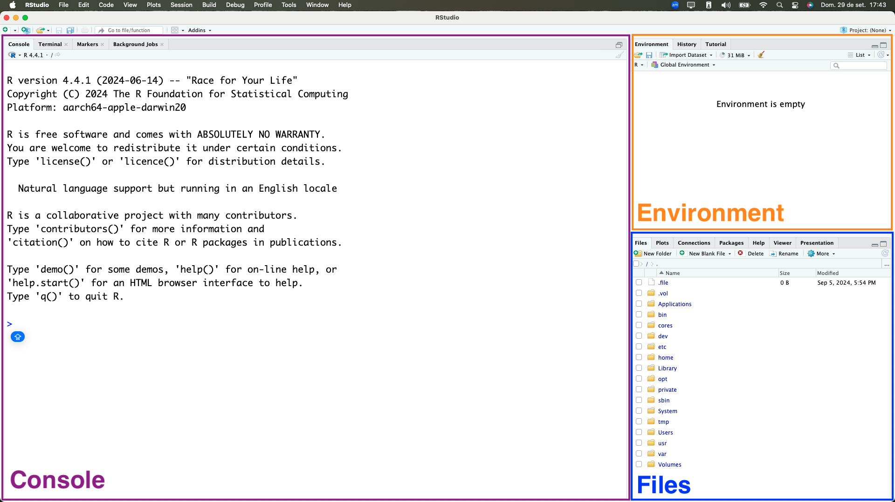

# Este é um comentário1 Introdução ao R e RStudio
1.1 Introdução
Ao longo deste curso, os softwares R e RStudio serão usados como uma ferramenta para auxiliar na aplicação de métodos e técnicas de análise da informação no planejamento, uma etapa fundamental em pesquisas que buscam o aumento da compreensão de questões no nosso campo de interesse.
É importante ressaltar o uso do R e do RStudio não pode ser dissociado do processo de pesquisa, que envolve a observação, formulação de hipóteses, coleta de dados e análise de dados, sendo este o foco deste curso.
1.2 O que é o R?
R é uma linguagem de programação com o foco em estatística, análise e visualização de dados.
Ela é uma linguagem de código aberto, o que significa que qualquer pessoa pode utilizá-la gratuitamente. Além disso, as pessoas com mais experiência na linguagem podem contribuir com o desenvolvimento de novas funcionalidades e pacotes.
Caso queira saber mais sobre a linguagem R, acesse o site oficial (R-Project).
Ao instalar o R, você terá acesso a um programa chamado “R Console” que permite escrever e executar códigos em R:
Porém o R Console não é muito amigável para escrever códigos complexos ou realizar análises de dados. Por isso, é recomendado utilizar um ambiente de desenvolvimento integrado (IDE). A IDE mais utilizada por pessoas que programam em R é o RStudio.
1.3 O que é o RStudio?

O RStudio é um IDE focada em programação em R, e é desenvolvido pela Posit. Ele facilita a escrita de códigos, execução de scripts, e visualização dos resultados.
Existem algumas versões do RStudio. Neste curso, utilizaremos o RStudio Desktop, pois é a versão de código aberto (portanto é gratuita). Daqui em diante, sempre que mencionarmos “RStudio”, estaremos nos referindo ao RStudio Desktop.
1.4 Instalando o R e o RStudio
Durante as aulas, utilizaremos os computadores do laboratório da universidade. Porém, caso você tenha acesso a um computador pessoal, recomendamos que instale o R e o RStudio nele, para praticar fora do período das aulas.
1.4.1 Instalação do R
Para instalar o R, acesse o site CRAN e escolha o link de download de acordo com o seu sistema operacional:
Instale o R utilizando o instalador baixado.
1.4.2 Instalação do RStudio
Após instalar o R, acesse o site RStudio Desktop e escolha o link de download de acordo com o seu sistema operacional:
Instale o RStudio utilizando o instalador baixado.
Dica
Caso o seu computador tenha limitações para instalação de programas, você pode utilizar o Posit Cloud, uma versão online do RStudio. Entretanto, a versão gratuita do Posit Cloud tem algumas limitações, como limite de tempo de uso (25 horas por mês) e de memória RAM (1 GB).
O vídeo abaixo apresenta um tutorial sobre como utilizar o Posit Cloud:
1.5 Conhecendo o RStudio
Ao abrir o RStudio, veremos a seguinte tela:
 Aos poucos, conheceremos os painéis e funcionalidades do RStudio. Neste momento, podemos destacar os três painéis que são apresentados:
Console: painel onde os códigos são executados. É similar ao “R Console”, citado anteriormente.
Environment: painel onde as variáveis e dados carregados ficam listados.
Files: painel onde podemos navegar por arquivos no computador. A página inicial é o diretório de trabalho: esse conceito será explicado mais adiante.
1.6 Scripts
No RStudio, podemos escrever e executar códigos no Console, porém os códigos são perdidos quando fechamos o programa. Para salvar os códigos e reutilizá-los posteriormente, utilizamos scripts.
Os scripts são arquivos de texto onde podemos escrever códigos R e salvá-los para utilizar posteriormente. É recomendado que qualquer código que você deseje reutilizar ou que seja importante para a análise que você fizer seja salvo em um script.
Existem algumas formas de criar um novo script:
No menu superior, clicando em
File > New File > R Script.Utilizando o atalho
Ctrl + Shift + N(Windows) ouCmd + Shift + N(Mac).Clicando no ícone de um arquivo com um sinal de
+no canto superior esquerdo do RStudio e selecionandoR Script:

Após abrir um script, o RStudio exibirá 4 paineis:
Dica
O script é um arquivo salvo no nosso computador. Lembre-se de salvar os scripts com frequência para evitar perder o nosso trabalho.
Podemos salvar um script de algumas formas, como:
Clicando em
File > Saveno menu superior.Clicando no ícone do disquete ().
Utilizando o atalho
Ctrl + S(Windows) ouCmd + S(Mac).
1.6.1 Como executar os códigos?
Podemos escrever e executar códigos no Console ou em um script.
No Console, escrevemos o código diretamente e pressionamos Enter para executá-lo.
Em um Script, escrevemos o código e podemos executá-lo de algumas formas:
Selecionando o trecho de código que queremos executar e clicando no botão
Rundo RStudio, ou utilizando o atalhoCtrl + Enter(Windows) ouCmd + Enter(Mac).Clicando no trecho que queremos executar e clicando no botão
Rundo RStudio, ou utilizando o atalhoCtrl + Enter(Windows) ouCmd + Enter(Mac).
1.6.2 Comentários
Comentários são textos que não são executados pelo R. Podemos usar comentários para explicar o que um bloco de código faz, para anotar ideias e explicar escolhas feitas, ou para desativar temporariamente um trecho de código.
No R, todo texto em uma linha após um hashtag (#) é um comentário. Por exemplo:
1.7 Funções
Agora que já sabemos onde escrever nossos códigos em R (no Console ou em um script), é importante entender o conceito de funções.
Uma função é tipo de objeto no R, que quando executado, executa um bloco de código específico. As funções são úteis para evitar repetição de códigos e organizar o nosso trabalho.
No R, existem muitas funções prontas que podemos utilizar. Por exemplo, a função Sys.Date() retorna a data atual do sistema:
# Consutar a data atual do sistema (computador)
Sys.Date()[1] "2025-05-28"Para utilizar uma função, escrevemos o nome dela seguido de parênteses. Dentro dos parênteses, podemos colocar dados e informações úteis para a função executar a tarefa desejada, e são chamados de argumentos.
Por exemplo, a função sqrt() calcula a raiz quadrada de um número. Para utilizá-la, podemos escrever sqrt() e informar esse número entre parênteses:
# Calcular a raiz quadrada de 25
sqrt(25)[1] 5
Dica
Ao adquirir experiência com o R, podemos criar nossas próprias funções. Isso é útil para automatizar tarefas repetitivas e para organizar o código.
1.8 Pacotes
Pacotes do R são coleções de funções, dados e documentação que estendem a funcionalidade básica da linguagem.
O CRAN (Comprehensive R Archive Network) é o repositório oficial de pacotes do R. Ele contém milhares de pacotes que podem ser instalados e utilizados gratuitamente. Em maio de 2025, o CRAN continha mais de 22.000 pacotes disponíveis.
Para instalar um pacote, utilizamos a função install.packages() e informando o nome do pacote como texto entre aspas. Por exemplo, para instalar o pacote {tidyverse}, utilizamos o seguinte comando:
# Instalar o pacote tidyverse
install.packages("tidyverse") Apenas precisamos instalar um pacote uma vez.
Depois de instalado, podemos carregá-lo com a função library(), para que as funções do pacote fiquem disponíveis para uso:
# Carregar o pacote tidyverse
library(tidyverse) ── Attaching core tidyverse packages ──────────────────────── tidyverse 2.0.0 ──
✔ dplyr 1.1.4 ✔ readr 2.1.5
✔ forcats 1.0.0 ✔ stringr 1.5.1
✔ ggplot2 3.5.2 ✔ tibble 3.2.1
✔ lubridate 1.9.4 ✔ tidyr 1.3.1
✔ purrr 1.0.4
── Conflicts ────────────────────────────────────────── tidyverse_conflicts() ──
✖ dplyr::filter() masks stats::filter()
✖ dplyr::lag() masks stats::lag()
ℹ Use the conflicted package (<http://conflicted.r-lib.org/>) to force all conflicts to become errorsPrecisamos carregar o pacote sempre que abrirmos um novo script, ou quando reiniciamos o RStudio. Uma pratica frequente é carregar os principais pacotes necessários no início do script.
Cuidado
Uma outra forma de acessar uma função é utilizando o operador ::. Por exemplo, para acessar a função read_csv() do pacote {readr}, podemos escrever readr::read_csv().
Essa sintaxe é menos frequente, porém útil para evitar problemas de conflito de funções com o mesmo nome em pacotes diferentes. Esse problema acontece mais frequentemente quando carregamos muitos pacotes em um mesmo script.
Por exemplo: o pacote {dplyr} apresenta uma função filter(), e o pacote {stats} também apresenta uma função filter(). Se não usarmos o operador ::, a função utilizada será a do pacote que foi carregado por último. Usando o operador ::, podemos escolher qual função queremos utilizar.
1.9 Documentação
As funções e pacotes do R apresentam textos com explicações e exemplos de uso, chamados de documentação.
As documentações podem ser acessadas online, ou diretamente no RStudio.
1.9.1 Documentação no RStudio
No RStudio, podemos acessar a documentação de uma função ou pacote das seguintes formas:
- Para buscar informações sobre funções de pacotes já carregados (com
library), podemos utilizar a funçãohelp(), informando o nome da função que queremos buscar como argumento (ex:help(mean)), ou utilizar o operador?, seguido do nome da função (ex:?mean).
# Abrir a documentação da função mean()
help(mean)
?mean - Para fazer uma por funções presentes em todos os pacotes instalados no computador, podemos utilizar o operador
??, seguido pelo termo que queremos buscar (ex:??mean). Essa é uma busca mais ampla, que procura pelo termo no nome e na descrição das funções.
# Buscar por funções que contenham o termo "mean"
??mean - Podemos utilizar o painel Help para buscar informações sobre funções e pacotes:
Além disso, a maioria dos pacotes vem com textos explicativos sobre como usá-los, chamadas de vignettes. Elas estão disponíveis online, mas também podem ser acessadas diretamente no RStudio.
Para acessar no RStudio, podemos usar a função browseVignettes() para listar as vignettes disponíveis para um pacote específico. A lista será apresentada em uma janela do navegador (ex: Google Chrome, Firefox, Safari, etc):
# Listar as vignettes do pacote dplyr
browseVignettes("dplyr")1.9.2 Documentação online
Como citado anteriormente, é possível acessar a documentação dos pacotes diretamente no RStudio e também online. No geral, o conteúdo disponível online é igual ao disponível no RStudio, mas pode ser mais fácil de buscar e navegar.
Uma forma de acessar a documentação online é fazendo uma busca no Google com os termos “R documentation {nome da função}”. Por exemplo: “R documentation mean()”.
Alguns pacotes apresentam também sites próprios com documentações e vignettes.
Por exemplo, o pacote {dplyr} (que usaremos no curso) tem um site próprio onde conseguimos acessar a documentação. Os pacotes do tidyverse apresentam sites similares, com páginas com os seguintes conteúdos:
Em Get started encontramos uma introdução ao pacote, e exemplos de uso para quem quer aprender a usá-lo.
Em Reference, encontramos a lista de funções disponíveis no pacote, e podemos acessar a documentação de cada uma delas:
- Em Articles podemos acessar as vignettes:
1.9.3 Cheatsheets
As cheatsheets (ou folhas de cola) são documentos resumidos com informações sobre funções e pacotes. Elas são úteis para consulta rápida.
A Posit (empresa que desenvolve o RStudio) disponibiliza cheatsheets para diversos pacotes e tópicos. Elas podem ser acessadas no site Posit Cheatsheets.
A lista a seguir apresenta algumas cheatsheets sobre temas que serão abordados ao longo do curso: